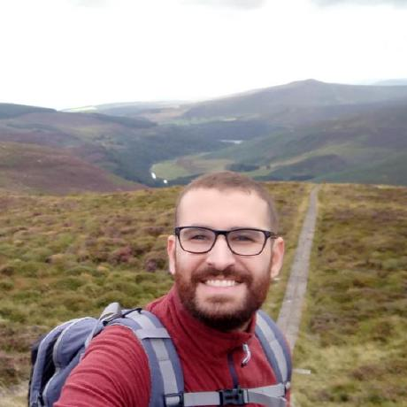

I'm a Senior Software Engineer with experience designing, developing and modernizing complex software systems across frontend, full-stack and backend roles. Throughout my career, I've helped teams solve complex technical problems, modernize legacy platforms and deliver scalable, maintainable software.
My strongest expertise is in JavaScript, TypeScript and React, where I've spent the last several years building large-scale web applications, frontend architectures and geospatial visualization platforms. I've also worked across the software stack throughout my career, particularly with .NET/C#, and continue expanding my backend knowledge through personal projects with Python and PHP/WordPress.
Beyond software development, I enjoy technical discovery, software architecture, improving developer experience, and collaborating closely with Product and UX to deliver practical solutions.
I'm particularly interested in applying AI to software engineering. Beyond using AI as a coding tool, I focus on designing AI-assisted software engineering workflows by applying context engineering, structured project knowledge and AI tooling. Combined with years of software engineering experience, this enables me to understand unfamiliar domains quickly, become productive with new technologies and contribute effectively to well-engineered solutions.
What make me special
-

Good communication
I value open and honest communication. I believe that clear discussions help teams align expectations, solve problems more effectively and build stronger working relationships.
-
Team player
I enjoy collaborating with others, sharing knowledge and learning from different perspectives. I’m comfortable asking for help when needed and supporting teammates whenever I can.
-
Creative Thinking
I enjoy exploring different perspectives and challenging assumptions. Some of the best solutions emerge when we're willing to look beyond conventional approaches.
-
Multilingual
Portuguese is my native language. I’m fluent in English and currently learning Dutch.
-
Problem Solving
I enjoy tackling complex problems and finding practical solutions. Once a problem is solved, I believe it's important to understand its root cause and learn from the experience.
-
Adaptability
I’m comfortable stepping outside my comfort zone to learn new technologies, take on unfamiliar challenges or support the needs of the team.
-
Empathy & Respect
I believe successful teams are built on mutual respect, trust and understanding. Different backgrounds and perspectives make teams stronger.
-
Accountability and humbleness
I'm not afraid to admit my mistakes, doing so is a great way to evolve.